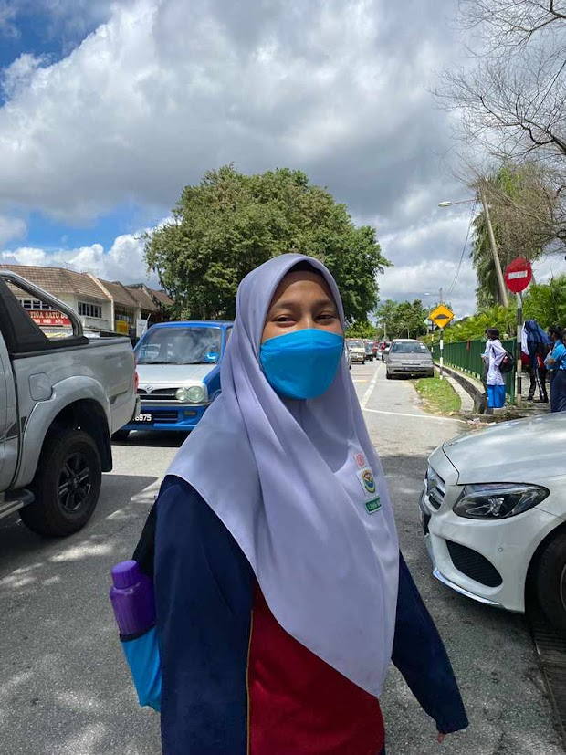
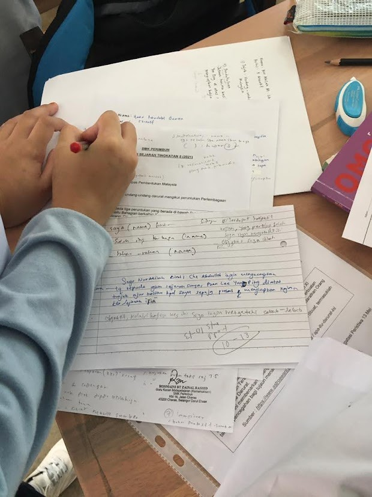
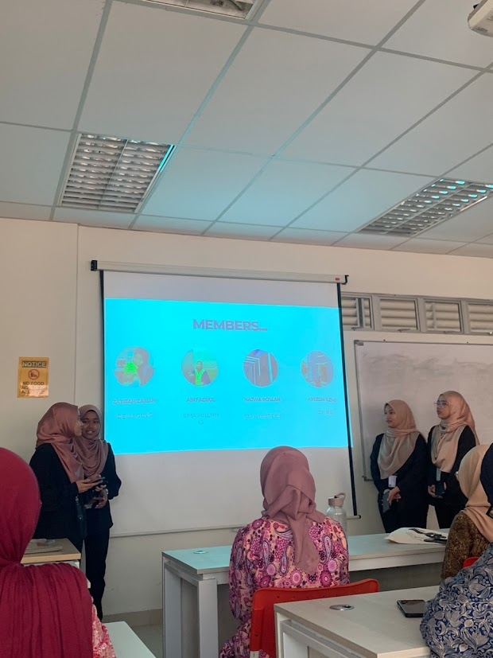
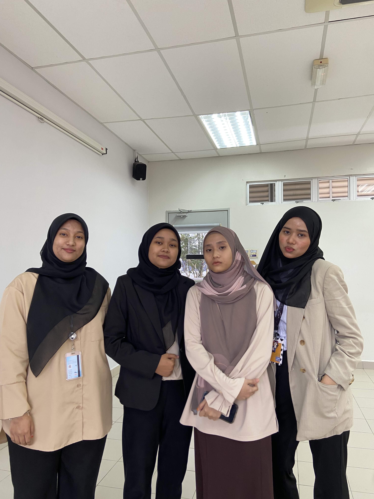

Najwa's Personal Website |
||||||||||||||||||||||
| Home | Biodata | Experience | Education | Family | Gallery | |||||||||||||||||
My Education |
||||||||||||||||||||||
|
Here are some of my experiences throughout my life: My educational journey began at Sekolah Kebangsaan Taman Cuepacs, where I studied from 2011 to 2016. During these formative years, I cultivated a love for learning and acquired essential skills that set the foundation for my academic growth. I continued my studies at SMK Perimbun from 2017 to 2021, where I actively engaged in various academic and extracurricular activities, ultimately achieving a good result in SPM, a result that reflected my dedication and perseverance.
Currently, I am pursuing a Diploma in Information Management at Universiti Teknologi MARA (UiTM), which I started in 2022 and am set to complete soon. This program has provided me with a deeper understanding of information systems and technology, as well as hands-on experience that is vital for my future career. Each stage of my education has been instrumental in shaping my skills and aspirations, preparing me for the challenges and opportunities ahead.
|
||||||||||||||||||||||
|




| ||||||||||||||||||||||
|
© 2024 Najwa. All rights reserved. |
||||||||||||||||||||||